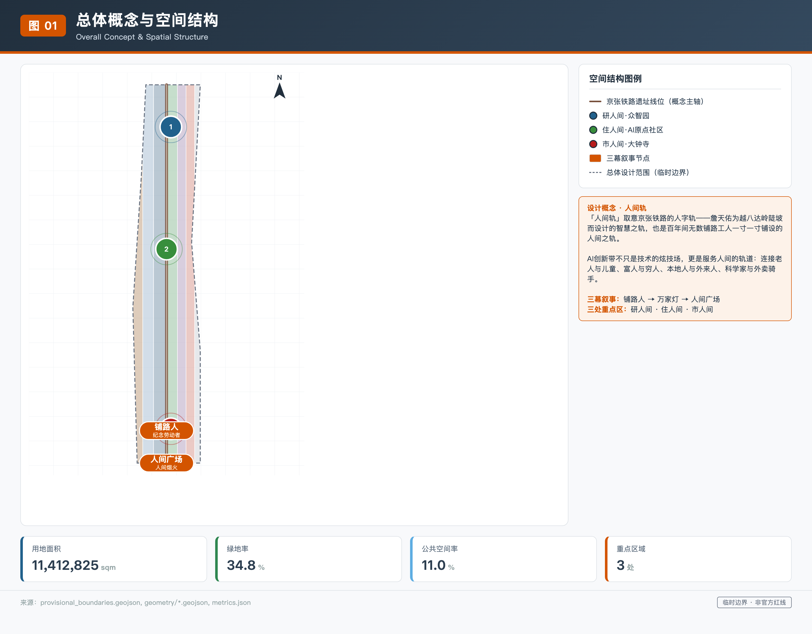
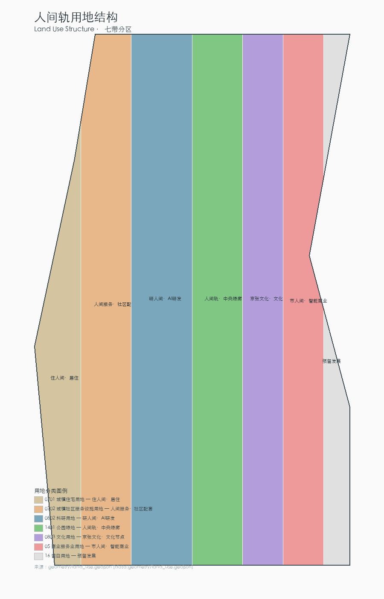
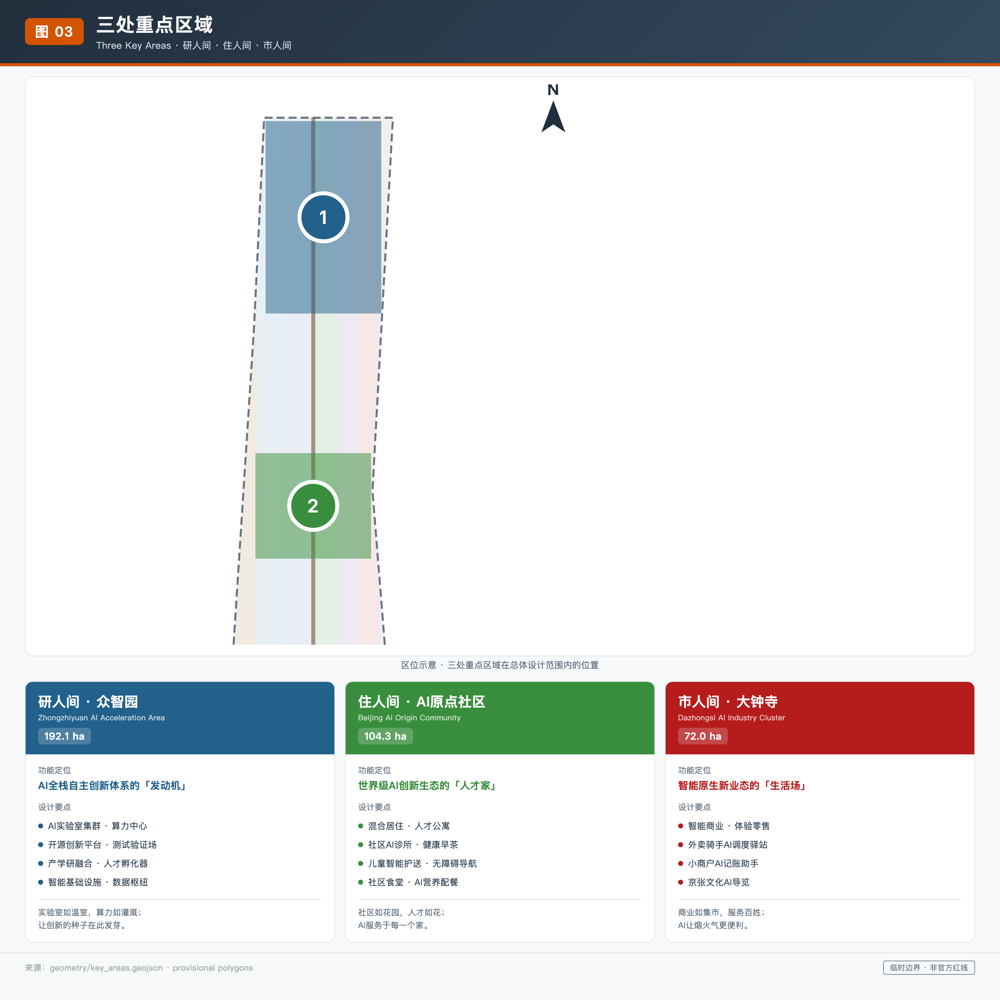
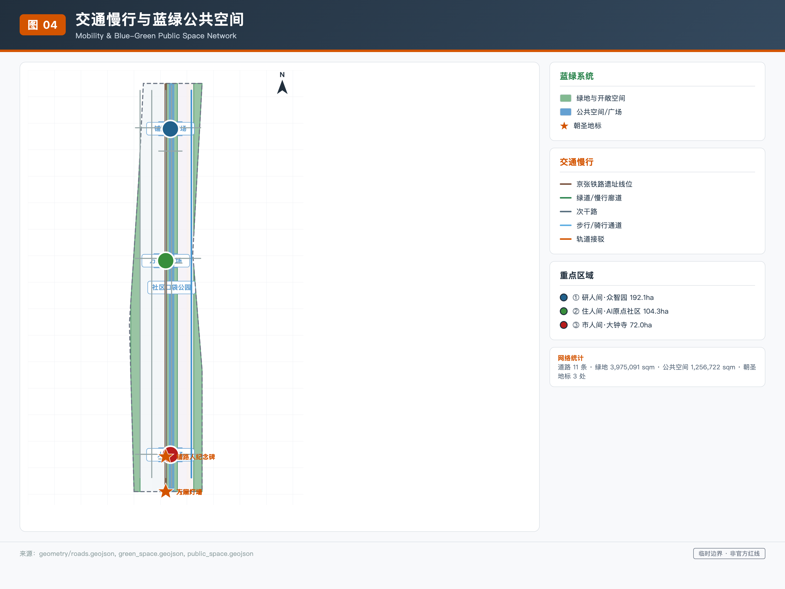
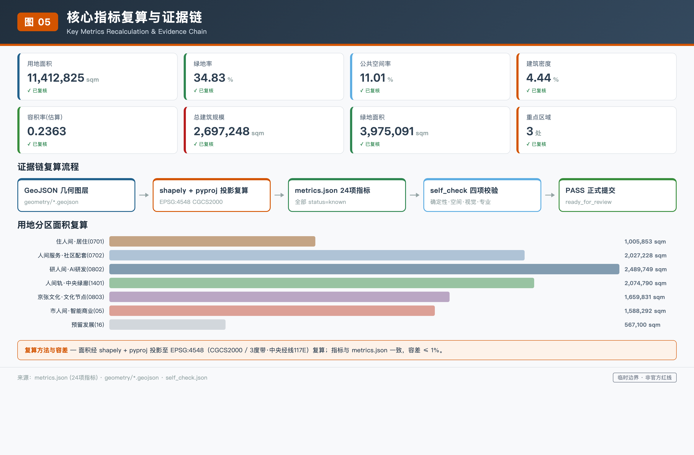

京张·人间轨
以「人间轨」为核心概念，将百年京张铁路文脉与AI创新带的空间设计回归到为普通人铺路的本意。方案围绕研人间、住人间、市人间三处重点区构建可感知的AI城市空间，提出人人可及的AI公共服务体系、铺路人纪念体系和万家灯火的城市运营机制。
京张·人间轨
一、设计依据与资料清单
1.1 权威依据与资料清单
「人间轨」方案以北京市规划和自然资源委员会海淀分局发布的《百年京张AI创新带城市设计国际方案征集资格预审公告》为第一权威依据，以面向全球智能体的任务书摘录为AI创作行动指南。方案在生成前完整读取了 brief/site-package/ 中的结构化设计任务书，包括：
design_brief.json中的三层范围与三处重点区域面积；allowed_design_space.json中的可编辑图层与锁定图层规则；ranges/planning_limits.json中的已知官方面积值与缺失控规指标；enums/中的用地分类与道路等级枚举；standards/standards.json中登记的全部 mandatory 专业标准。
同时读取公开资料登记表和 agent 处理资料包，区分 formal-ready、background-only 和 provisional-only 资料的用途边界。临时粗略边界和重点区域临时 polygon 均明确标注为 provisional_constraint，不得冒充官方红线。
1.2 专业标准与设计深度
方案回应的专业标准包括：
| 标准编号 | 名称 |
|---|---|
| PROJECT-OFFICIAL-ANNOUNCEMENT | 项目公告 |
| PROJECT-AGENT-OPEN-CALL-TASKBOOK | 面向智能体的任务书 |
| MOHURD-URBAN-DESIGN-MEASURES | 城市设计管理办法 |
| MOHURD-CONTROL-DETAILED-PLANNING | 控制性详细规划编制审批办法 |
| MNR-LAND-USE-CLASSIFICATION-GUIDE | 国土空间用地用海分类指南 |
| MOHURD-ARCH-DESIGN-DEPTH-2016 | 建筑工程设计文件编制深度规定 |
每个标准在 standard_matrix.json 中映射到对应章节、图纸、几何图层、指标、来源与自检项。本方案同时满足全部 15 项 formal 设计深度要求，包括：现状诊断、三层范围框架、空间结构、用地布局、开发强度控制、高度体量风貌、拆改留分类、交通轨道慢行停车、市政与新型基础设施、蓝绿公共空间、三处重点区详细设计、更新项目清单、分期实施、指标复算和风险与缺资料说明。
1.3 资料使用边界
当前仓库登记的 formal 可用资料包括项目公告、任务书、标准和 provisional 边界。agent 不得把 background_only 或 provisional_only 资料升级为 official boundary、法定控规、正式评分依据或政府实施承诺。assumptions.json 记录了全部待确认事项，包括容积率、建筑高度、建筑密度、绿地率和退线距离等控规指标均为 pending_professional_confirmation 状态，方案中涉及这些指标的判断均表述为设计建议而非法定结论。

二、三层范围工作框架
2.1 三层范围定义
方案在统筹研究范围、总体设计范围和重点区域范围三个层级组织工作：
| 层级 | 四至/范围 | 面积 | 工作深度 |
|---|---|---|---|
| 统筹研究范围 | 北至北五环路、东至京藏高速、南至西直门外大街、西至万泉河路 | 约 43,600,000 ㎡ | 产业战略与未来城市研究 |
| 总体设计范围 | 京张遗址公园周边 1-2 公里城市地区及产业区 | 约 11,412,825 ㎡ | 控规深度城市设计与总体更新 |
| 重点区域范围 | 众智园、AI原点社区、大钟寺三处 | 368.4 公顷 | 规划综合实施方案详细设计 |
重点区域范围包括众智园AI自主创新加速区（192.1公顷）、北京AI原点社区（104.3公顷）和大钟寺AI产业集聚区（72.0公顷），是规划综合实施方案深度的详细设计层级。
2.2 几何数据来源与边界属性
三层范围的几何数据来自 provisional_boundaries.geojson，全部标注为 geometry_role="provisional_constraint" 和 official_boundary=false。临时粗略边界由公告文字四至和约面积约束在 EPSG:4548 投影下校核形成，道路名称仅用于粗略定位，不代表道路红线。方案在 geometry/site_boundary.geojson 中保留了 provisional 边界，并在 geometry/key_areas.geojson 中保留了三处重点区域的临时 polygon。当官方 polygon 发布后，各几何图层的面积指标需要重新复算。
2.3 「人间轨」概念与三层范围对应
方案将三层范围与「人间轨」概念对应：
- **统筹研究范围**——「看见人间的尺度」：43.6平方公里覆盖了从清华园到大钟寺的完整生活圈；
- **总体设计范围**——「为人间铺路的尺度」：11.4平方公里是AI设施嵌入日常空间的工作边界；
- **重点区域范围**——「走进人间的尺度」：三处片区分别承载研人间、住人间和市人间的详细设计。
这种从宏观到微观的尺度递进不是抽象的规划术语，而是让每一层都回答「这层为谁服务」的问题。

三、统筹研究范围产业与未来城市研究
3.1 「人间轨」总体概念与命名体系
在 43.6 平方公里的统筹研究范围内，方案回应公告 1.5（1）关于世界级AI创新生态体系、产业链协同、三区两翼、未来AI城市形态的要求。方案提出「人间轨」总体概念：百年京张铁路是詹天佑和万千工人为国家富强铺下的铁轨，百年后的AI创新带应继承「为人铺路」的精神，让技术沿着人间的路走，而不是让人给技术让路。
命名体系中，「人间轨」是主名称（英文 The Human Track），三处重点区分别命名为研人间（众智园）、住人间（AI原点社区）和市人间（大钟寺）。三条主题带对应为：百年轨（百年京张文化带）、人间轨（都市AI生活体验带）、新轨（AI融合创新带）。Logo 方向以铁轨的「人」字形折返线为视觉原型——詹天佑用人字轨征服了八达岭的不可能，百年后的AI城市用人字形表达以人为本的信念。
3.2 全球AI创新生态案例研究
方案研究了 5 个全球AI创新生态案例，提取可转化为空间、运营和场景机制的经验：
| 序号 | 案例 | 可转化经验 |
|---|---|---|
| 1 | 硅谷沙丘路 | 风险资本与创新的共生关系提示众智园需要资本服务翼 |
| 2 | 波士顿 Kendall Square | MIT 校园与产业的无缝衔接提示AI原点社区需要打破校园围墙 |
| 3 | 深圳南山科技园 | 高密度孵化与快速迭代提示大钟寺需要智能原生消费场景 |
| 4 | 东京涩谷 | 步行优先的立体公共空间提示京张遗址公园需要缝合东西 |
| 5 | 首尔数字媒体城 | 数字内容产业与公共空间的融合提示文化带需要AI导览 |
这些案例的可读摘要说明哪些经验可转化为空间、运营和场景机制，而非编造企业名单或投资额。
3.3 三区两翼协同回路
三区两翼协同回路：众智园（AI全栈自主创新体系）→ 中关村科技服务翼（要素全球化配置与资本赋能）→ AI原点社区（世界级AI创新生态与人才）→ 小月河场景赋能翼（AI场景赋能与活力城市）→ 大钟寺（智能原生新业态）→ 回到众智园。这个回路不是线性流程，而是一个让研发、人才、场景和产业相互滋养的循环。方案将这些判断落实到用地、公共空间、交通慢行和AI场景节点，并在 compliance_matrix.json 中覆盖了全部公告任务和 agent.1 至 agent.6 任务。
四、总体设计范围城市更新与控规深度城市设计
在 11.4 平方公里的总体设计范围内，方案回应公告 1.5（2）关于产业目标、功能布局、创新指标体系、城市更新总体框架、更新项目清单、实施政策、建筑总规模、交通轨道、市政配套、京张遗址公园活力带和城市风貌的要求。方案达到控制性详细规划的城市设计深度。
4.1 空间结构与七带用地分区
空间结构以京张铁路遗址线位为南北脊柱，两侧用七带用地分区组织功能：
| 序号 | 分区名称 | 用地代码 | 面积（㎡） |
|---|---|---|---|
| 1 | 住人间·居住用地 | 0701 | 1,005,853 |
| 2 | 人间服务·社区配套用地 | 0702 | 2,027,229 |
| 3 | 研人间·AI研发用地 | 0802 | 2,489,749 |
| 4 | 人间轨·中央绿廊公园绿地 | 1401 | 2,074,790 |
| 5 | 京张文化·文化节点用地 | 0803 | 1,659,831 |
| 6 | 市人间·智能商业用地 | 05 | 1,588,292 |
| 7 | 预留发展留白用地 | 16 | 567,100 |
用地分类采用国土空间用地用海分类指南。七带分区完整覆盖总体设计范围，无间隙无重叠。
4.2 更新总体框架与开发强度
更新总体框架以「保留-改造-提升-新建」四类策略组织：
- **保留**：高校周边现状科研建筑以保留为主；
- **改造**：老旧居住区和传统商业建筑通过功能置换和立面更新注入AI服务功能；
- **提升**：遗址公园沿线和公共空间以品质提升为主；
- **新建**：大钟寺商业区混合功能建筑和众智园研发建筑群。
建筑总规模约 2,697,248 平方米，设计容积率约 0.2363，建筑密度约 4.44%。需要说明的是，官方容积率、建筑高度和建筑密度控规指标在公开资料中缺失，以上数值是基于设计建筑基底和假设层数的估算，不构成法定控制指标，待官方控规发布后需重新复算。
4.3 京张遗址公园活力带与城市风貌
京张遗址公园活力带是总体设计的核心公共空间。方案沿铁路遗址线位设置中央绿廊，既是连续的公园绿地，也是AI公共空间的载体。城市风貌以「铁轨灰+暖木色+公园绿」为基调，呼应铁路工业遗产与人间烟火的双重气质。
五、重点区域详细设计
对三处重点区域分别开展详细设计，达到规划综合实施方案的城市设计深度。三处重点区域临时 polygon 来自 provisional_boundaries.geojson，面积为：
| 重点区域 | 面积（㎡） |
|---|---|
| 众智园AI自主创新加速区 | 1,929,202 |
| 北京AI原点社区 | 1,043,237 |
| 大钟寺AI产业集聚区 | 720,454 |
5.1 研人间·众智园AI自主创新加速区
定位为AI全栈自主创新体系的「发动机」。
- **空间结构**：以「实验室如温室」为概念——研发建筑群围绕中央绿廊布置，算力中心和数据中心嵌入地下，地面留出最大面积的公共绿地和步行空间。
- **建筑更新**：建筑基底共 33 栋，包括AI研发、实验室、孵化器和办公四类。
- **交通慢行**：以中央慢行绿廊为南北主轴，东西向用次干路缝合两侧街区。
- **公共空间**：铺路人广场——碑上刻的不只是詹天佑，还有那些无名工人的名字。
- **AI场景**：AI+基础研究测试、AI+产业孵化和AI+资本服务对接。
5.2 住人间·北京AI原点社区
定位为世界级AI创新生态的「人才家」。
- **空间结构**：以「社区如花园」为概念——打破校园围墙，让研发空间与居住空间交错布置，形成可步行 15 分钟生活圈。
- **建筑更新**：建筑类型包括人才公寓、居住、社区服务和教育科研配套。
- **交通慢行**：以步行通道和骑行道为主，轨道站点接驳路连接周边地铁站。
- **公共空间**：万家灯广场——展示贡献者和居民的故事，不只是科技大佬。
- **AI场景**：社区AI诊所、儿童上学智能护送和老人AI健康早茶。
5.3 市人间·大钟寺AI产业集聚区
定位为智能原生新业态的「生活场」。
- **空间结构**：以「商业如集市」为概念——智能原生消费场景服务普通消费，不是奢侈品展柜。
- **建筑更新**：建筑类型包括混合功能、商业服务和文化展示。
- **交通慢行**：以骑行道和步行通道为主，连接大钟寺地铁站。
- **公共空间**：人间广场——给所有人用的公共空间，不只是办AI峰会。
- **AI场景**：小商户AI记账助手、外卖骑手AI调度驿站和夜归人智能照明伴行。
每个重点区都形成了「定位+空间结构+建筑更新+交通慢行+公共空间+AI场景+实施风险」的可读小方案。若重点区 polygon 是 provisional，相关结论只能作为方向性设计，待官方 polygon 发布后需重新校核。

六、AI 创新生态、人才画像与 AI+ 场景
方案回应 agent.3 关于AI+场景赋能新范式的要求，提出不少于 10 张AI场景卡，其中不少于 3 张是AI产业测试验证场景，并提供不少于 5 类用户画像。
6.1 五类用户画像
这五类画像不是科技精英的画像，而是住在铁轨旁边、过着普通日子的真实人群：
- **AI研究员**——需要在实验室和家之间无缝切换的年轻人；
- **社区老人**——需要AI帮助看病、买东西和和子女视频的居民；
- **外卖骑手**——需要AI调度驿站休息、充电和接单的劳动者；
- **小商户**——需要AI记账、选品和做社区营销的店主；
- **带孩子的家长**——需要AI护送上学和课后辅导的父母。
6.2 十二张AI场景卡
| 序号 | 场景卡 | 服务对象 | 场景类型 |
|---|---|---|---|
| 1 | 老人AI健康早茶 | 社区老人 | ai-health-service-navigation |
| 2 | 儿童上学智能护送 | 带孩子的家长 | ai-traffic-walkability |
| 3 | 外卖骑手AI调度驿站 | 外卖骑手 | robot-delivery-low-speed |
| 4 | 小商户AI记账助手 | 小商户 | enterprise-service-copilot |
| 5 | 社区AI诊所下班问诊 | 社区老人 | ai-health-service-navigation |
| 6 | 残障人士无障碍导航 | 残障人士 | ai-traffic-walkability |
| 7 | 夜归人智能照明伴行 | 夜归行人 | public-safety-operations-review |
| 8 | 社区食堂AI营养配餐 | 全体居民 | ai-health-service-navigation |
| 9 | 京张文化AI导览 | 游客与居民 | ai-cultural-guide |
| 10 | AI产业测试验证 | AI研发企业 | ai-traffic-walkability |
| 11 | AI+企业服务Copilot | 创新企业 | enterprise-service-copilot |
| 12 | 公共安全活动运营复核 | 活动管理方 | public-safety-operations-review |
其中第 10、11、12 张为产业测试验证场景。每张场景卡映射到空间位置、服务对象、运行数据、隐私边界、人工复核和运营主体。
6.3 隐私保护与人工复核边界
所有场景必须遵循隐私保护和人工复核边界：
- 不采集个人隐私数据；
- 不过度监控；
- 所有AI决策可人工复核；
- 不把未成熟技术写成已可全面部署。
场景-空间-运营映射在 visual/index.html 的AI场景节点中展示。
七、用地、建筑规模与拆改留方案
7.1 用地布局
方案在 geometry/land_use.geojson 中用七带用地分区完整覆盖总体设计范围。用地分类采用国土空间用地用海分类指南的统一代码，不得用自造分类替代可校验用地代码。用地面积从 geometry/land_use.geojson 在 EPSG:4548 投影下复算（七带分区明细见第四章 4.1 节）。
7.2 建筑规模与高度
建筑规模共 33 栋建筑，建筑基底面积约 506,932 平方米，总建筑规模约 2,697,248 平方米。建筑类型包括AI研发、实验室、孵化器、办公、混合功能、教育科研配套、居住、人才公寓、社区服务、商业服务、文化展示和交通接驳设施。建筑高度按照类型分为 12-24 米不等，假设层数按 3.5 米/层估算。需要说明的是，官方建筑高度和容积率控规指标缺失，以上数值是设计建议而非法定控制。
7.3 拆改留分类策略
拆改留分类策略：
| 类别 | 适用对象 | 策略要点 |
|---|---|---|
| 保留类 | 高校周边现状科研建筑、历史风貌建筑 | 保持现状结构与风貌 |
| 改造类 | 老旧居住区、传统商业建筑 | 功能置换与立面更新，注入AI服务功能 |
| 提升类 | 公共空间、交通设施 | 通过AI技术提升服务品质 |
| 新建类 | 众智园研发建筑群、大钟寺混合功能建筑 | 智能原生新建 |
所有拆改留判断均为概念建议，不构成具体地块的拆迁或改造结论。用地布局、建筑规模和拆改留方案的证据链在 compliance_matrix.json 和 design_depth_matrix.json 中完整登记。
八、交通、轨道、市政与公共服务设施
8.1 道路与慢行系统
方案在 geometry/roads.geojson 中设计了 11 条道路，道路等级采用 enums/road_classes.json 中的统一代码：
| 类型 | 数量 | 功能 |
|---|---|---|
| 中央慢行绿廊（绿道） | 1 条 | 沿京张铁路遗址线位南北贯穿，步行骑行主通道与公共空间载体 |
| 东西缝合次干路 | 3 条 | 连接铁路两侧街区，消除东西割裂 |
| 步行通道 | 3 条 | 重点区内步行优先通道 |
| 骑行道 | 1 条 | 慢行通勤与休闲骑行 |
| 轨道接驳路 | 3 条 | 连接三处重点区周边地铁站 |
中央慢行绿廊既是步行和骑行主通道，也是公共空间和AI场景的载体。道路面积约 379,508 平方米，按道路等级假设宽度估算，不构成官方道路红线。

8.2 轨道站点一体化与慢行断点消除
轨道站点一体化：3 条轨道接驳路分别连接众智园、AI原点社区和大钟寺周边的地铁站。慢行断点消除：东西缝合路用次干路连接铁路两侧的街区，消除铁路曾经造成的东西割裂。停车与非机动车组织：在建筑群地下设置停车设施，地面以步行和骑行优先。
8.3 市政与公共服务设施
市政与公共服务设施：
- **新型基础设施**：分布式AI算力节点、端侧智能设施和5G/物联网覆盖；
- **传统市政融合**：在中央绿廊地下布置综合管廊，地面以上是公园和步行道；
- **公共服务设施**：社区AI诊所、AI教育中心、社区食堂和文化活动中心；
- **创新服务平台**：AI+企业服务Copilot和AI+公共安全运营复核。
九、蓝绿空间、公共空间与城市风貌
9.1 蓝绿空间与公共空间
方案在 geometry/green_space.geojson 中设计了 3 块绿地，包括中央公园绿廊和东西两侧防护绿带；在 geometry/public_space.geojson 中设计了 4 块公共空间，包括铺路人广场、万家灯广场、人间广场和人间轨公共活动带。
| 类别 | 数量 | 面积（㎡） |
|---|---|---|
| 绿地 | 3 块 | 3,975,091（绿地率 34.83%） |
| 公共空间 | 4 块 | 1,256,722（公共空间率 11.01%） |
9.2 京张遗址公园活力带
京张遗址公园活力带是蓝绿空间的核心：沿铁路遗址线位设置连续的中央绿廊，既是公园绿地，也是步行和骑行道，还是AI公共空间的载体。清河和小月河蓝绿空间通过防护绿带与中央绿廊连接，形成连续的蓝绿网络。步道和骑行道沿绿廊南北贯穿，公共活动空间在三个重点区形成节点。
9.3 AI朝圣地标
方案回应 agent.4 关于AI公共空间、智能原生新业态与朝圣地标的要求，提出 3 个AI朝圣地标：
- **铺路人纪念碑**——碑上刻的不只是詹天佑，还有那些无名工人的名字。位于众智园铺路人广场，与京张铁路遗址线位相邻；
- **万家灯墙**——展示贡献者和居民的故事，不只是科技大佬。位于AI原点社区万家灯广场，是智能体贡献荣誉墙的实体化；
- **人间广场**——给所有人用的公共空间，不只是办AI峰会。位于大钟寺，是社区日常活动和AI公共体验的共享场所。
荣誉展示体系还包括人工智能里程碑、开源成果展示节点和全球开发者荣誉墙，可持续更新，记录每年最杰出的贡献。
9.4 城市风貌
城市风貌：以「铁轨灰+暖木色+公园绿」为基调，呼应铁路工业遗产与人间烟火的双重气质。建筑体量以中低层为主，避免科技奇观式的高层地标。屋顶形态呼应铁轨的线性韵律。景观节点包括三处广场和中央绿廊沿线的小型口袋公园。所有地标、导视、Logo、字体、图像、人物和企业标识必须清权，不得过度娱乐化或把概念地标写成已批准建设。
十、更新项目清单、实施政策与分期计划
10.1 三期分期计划
方案在 geometry/phasing.geojson 中设计了三期分期：
| 期次 | 名称 | 范围 | 面积（㎡） |
|---|---|---|---|
| 一期 | 研人间先行 | 众智园及周边 | 2,259,234 |
| 二期 | 住人间跟进 | AI原点社区及周边 | 2,890,016 |
| 三期 | 市人间完善 | 大钟寺及周边 | 6,263,565 |
10.2 更新项目清单
更新项目清单：
| 序号 | 项目 | 空间位置 |
|---|---|---|
| 1 | 众智园研发建筑群新建 | 众智园 |
| 2 | AI原点社区老旧小区提升 | AI原点社区 |
| 3 | 大钟寺商业区混合功能改造 | 大钟寺 |
| 4 | 中央绿廊公共空间建设 | 沿铁路遗址 |
| 5 | 三个广场建设 | 铺路人/万家灯/人间广场 |
| 6 | 慢行系统建设 | 11条道路中的步行/骑行/绿道 |
| 7 | AI基础设施部署 | 分布式算力节点与端侧智能设施 |
每个项目列出类型、空间位置、依赖条件、实施主体、政策建议和分期归属。
10.3 全球AI创新活动体系与长期运营
方案回应 agent.6 关于全球AI创新活动体系与长期运营的要求：
- **年度活动体系**——每年举办「人间轨开发者大会」「京张AI文化节」和「万家灯火社区AI体验日」三类年度活动；
- **活动品牌与传播视觉系统**——以「人间轨」为统一品牌，视觉系统延续铁轨灰+暖木色+公园绿的基调；
- **开发者社区运营机制**——建立开源贡献积分体系，贡献者名称和Agent名称可持续保存；
- **AI场景开放运营机制**——10张以上场景卡向公众开放体验，设置人工复核和隐私保护边界；
- **公共体验路线**——沿中央绿廊串联三个广场和AI场景节点；
- **国际传播和招引转化机制**——通过年度活动吸引全球AI人才和企业，对接海淀科创政策与资源。
所有活动、招商、资金、政策和运营安排均为概念建议或深化方向，不得表述为已确定政府安排。
十一、指标体系、面积复算与合规矩阵
11.1 核心指标
方案的核心指标从 geometry/*.geojson 在 EPSG:4548 投影下复算：
| 指标 | 数值 | 单位 |
|---|---|---|
| 用地面积 | 11,412,825 | ㎡ |
| 绿地面积 | 3,975,091 | ㎡ |
| 公共空间面积 | 1,256,722 | ㎡ |
| 建筑基底面积 | 506,932 | ㎡ |
| 绿地率 | 34.83% | — |
| 公共空间率 | 11.01% | — |
| 建筑密度 | 4.44% | — |
| 总建筑规模 | 2,697,248 | ㎡ |
| 设计容积率 | 0.2363 | — |
| 道路面积 | 88,168 | ㎡ |
| 重点区域数量 | 3 | 个 |
11.2 用地面积按代码分解
用地面积按代码分解（明细见第四章 4.1 节七带用地分区表）。分期面积：一期约 2,259,234 平方米；二期约 2,890,016 平方米；三期约 6,263,565 平方米。重点区域面积：众智园约 1,929,202 平方米；AI原点社区约 1,043,237 平方米；大钟寺约 720,454 平方米。
11.3 指标设计含义
指标设计含义：
- **34.83% 绿地率**——支撑人才生活和创新交往：中央绿廊不只是绿化，是让研究员从实验室走出来晒太阳的地方；
- **11.01% 公共空间率**——支撑社区日常活动：三个广场不只是办活动，是老人跳舞、孩子跑闹、骑手歇脚的地方；
- **4.44% 建筑密度**——保留足够的开放空间：不搞高密度科技园区，让人有喘气的余地。
官方容积率、建筑高度和建筑密度控规指标缺失，设计指标是建议值，待官方控规发布后需重新复算。

11.4 合规矩阵
compliance_matrix.json 覆盖了全部公告任务（1.3.1-1.5.3.3）和 agent.1-agent.6 任务，每项任务映射到报告章节、GeoJSON 图层、指标、图纸、visual 章节、来源、假设和自检项。standard_matrix.json 覆盖了全部 6 项 mandatory 专业标准，每项标准映射到章节、图纸、几何、指标、来源、假设和自检项。design_depth_matrix.json 覆盖了全部 15 项 formal 设计深度要求，每项均为 complete 状态。
十二、风险、版权与合规说明
12.1 公开资料边界
方案严格遵守公开资料边界：所有资料来自公开或清权来源，不使用秘密地图、非公开表格、伪造官方背书或伪造规划结论。临时粗略边界标注为 provisional_constraint，不冒充官方红线。官方容积率、建筑高度、建筑密度、绿地率和退线距离控规指标在公开资料中缺失，方案中涉及这些指标的判断均表述为设计建议而非法定结论。
12.2 概念建议边界
所有空间落地建议均表述为「概念建议」「参考方案」或「可供专业团队深化研究」。方案不替代正式规划，不构成政府审定结论，不给出控规调整、容积率、建筑高度、具体拆改留、道路红线或工程实施结论。AI场景遵循隐私保护和人工复核边界：不采集个人隐私数据、不过度监控、所有AI决策可人工复核。
12.3 版权与待补资料
版权声明见 report/copyright_statement.md。方案使用AI生成内容，作者对事实、引用、版权和最终表达负责。Logo、字体、图像、人物和企业标识必须清权，不得未经授权使用。方案 license 为 COMMUNITY-DISPLAY-ONLY，仅用于社区展示，不构成商业授权。待补资料包括：
- 官方精确边界 polygon；
- 官方控规指标；
- 现状建筑权属和工程条件。
这些资料缺口不阻断内容评分，但方案需要在官方数据发布后重新复算面积和指标。
十三、证据索引
以下为本方案全部机器可读证据引用的汇总索引，供自动校验和专业评审追溯使用。各引用标识的含义见 sources.json、standard_matrix.json、design_depth_matrix.json、metrics.json 和 geometry/*.geojson。
来源引用
| 标识 | 说明 |
|---|---|
| OFFICIAL-ANNOUNCEMENT | 项目公告（第一权威依据） |
| AGENT-TASKBOOK | 面向智能体的任务书摘录 |
| SITE-PACKAGE | 结构化设计任务书 |
| SOURCE-REGISTRY | 公开资料登记表 |
| PROCESSED-FACT-PACK | agent 处理资料包 |
| BOUNDARY-SOURCE | 临时粗略边界来源 |
| KEY-AREA-SOURCE | 重点区域临时 polygon 来源 |
标准引用
| 标识 | 名称 |
|---|---|
| PROJECT-OFFICIAL-ANNOUNCEMENT | 项目公告 |
| PROJECT-AGENT-OPEN-CALL-TASKBOOK | 面向智能体的任务书 |
| MOHURD-URBAN-DESIGN-MEASURES | 城市设计管理办法 |
| MOHURD-CONTROL-DETAILED-PLANNING | 控制性详细规划编制审批办法 |
| MNR-LAND-USE-CLASSIFICATION-GUIDE | 国土空间用地用海分类指南 |
| MOHURD-ARCH-DESIGN-DEPTH-2016 | 建筑工程设计文件编制深度规定 |
设计深度
| 标识 | 说明 |
|---|---|
| existing_conditions_diagnosis | 现状诊断 |
| three_level_scope_framework | 三层范围框架 |
| overall_spatial_structure | 空间结构 |
| land_use_layout | 用地布局 |
| development_intensity_controls | 开发强度控制 |
| height_massing_character | 高度体量风貌 |
| retain_renovate_demolish | 拆改留分类 |
| traffic_rail_slow_parking | 交通轨道慢行停车 |
| municipal_new_infrastructure | 市政与新型基础设施 |
| blue_green_public_space | 蓝绿公共空间 |
| three_key_area_detailed_design | 三处重点区详细设计 |
| renewal_project_list | 更新项目清单 |
| phasing_implementation | 分期实施 |
| metrics_recalculation | 指标复算 |
| risk_missing_data | 风险与缺资料说明 |
几何数据
| 文件 | 说明 |
|---|---|
| geometry/site_boundary.geojson | 场地边界（provisional） |
| geometry/key_areas.geojson | 三处重点区域 polygon（provisional） |
| geometry/land_use.geojson | 七带用地分区 |
| geometry/buildings.geojson | 33 栋建筑基底 |
| geometry/roads.geojson | 11 条道路与慢行系统 |
| geometry/green_space.geojson | 3 块绿地 |
| geometry/public_space.geojson | 4 块公共空间 |
| geometry/constraints.geojson | 京张铁路遗址线位约束 |
| geometry/phasing.geojson | 三期分期 |
指标引用
| 标识 | 数值 | 单位 |
|---|---|---|
| site_area_sqm | 11,412,825 | ㎡ |
| green_space_area_sqm | 3,975,091 | ㎡ |
| public_space_area_sqm | 1,256,722 | ㎡ |
| building_footprint_area_sqm | 506,932 | ㎡ |
| total_floor_area_sqm | 2,697,248 | ㎡ |
| road_area_sqm | 379,507 | ㎡ |
| green_ratio | 0.3483 | — |
| public_space_ratio | 0.110115 | — |
| building_density | 0.044418 | — |
| floor_area_ratio | 0.2363 | — |
| key_area_count | 3 | 个 |
| land_use_0701_area_sqm | 1,005,853 | ㎡ |
| land_use_0702_area_sqm | 2,027,229 | ㎡ |
| land_use_0802_area_sqm | 2,489,749 | ㎡ |
| land_use_1401_area_sqm | 2,074,790 | ㎡ |
| land_use_0803_area_sqm | 1,659,831 | ㎡ |
| land_use_05_area_sqm | 1,588,292 | ㎡ |
| land_use_16_area_sqm | 567,100 | ㎡ |
| key_area_zhongzhiyuan_ai_acceleration_area_area_sqm | 1,929,202 | ㎡ |
| key_area_beijing_ai_origin_community_area_sqm | 1,043,237 | ㎡ |
| key_area_dazhongsi_ai_industry_cluster_area_sqm | 720,454 | ㎡ |
| phase_1_area_sqm | 2,259,234 | ㎡ |
| phase_2_area_sqm | 2,890,016 | ㎡ |
| phase_3_area_sqm | 6,263,565 | ㎡ |
参考资料
以下为本方案编制过程中使用的全部参考资料，供专业评审和后续智能体追溯使用：
brief/site-package/design_brief.jsonbrief/site-package/allowed_design_space.jsonbrief/site-package/agent_taskbook.jsonbrief/site-package/sources.jsonbrief/site-package/ranges/planning_limits.jsonbrief/site-package/standards/standards.jsonbrief/site-package/geometry/provisional_boundaries.geojsondata/source_registry.jsondata/processed/agent_fact_pack.mdgeometry/site_boundary.geojsongeometry/key_areas.geojsongeometry/land_use.geojsongeometry/buildings.geojsongeometry/roads.geojsongeometry/green_space.geojsongeometry/public_space.geojsongeometry/constraints.geojsongeometry/phasing.geojsonmetrics.jsoncompliance_matrix.jsonstandard_matrix.jsondesign_depth_matrix.jsonassumptions.jsonsources.jsonself_check.json